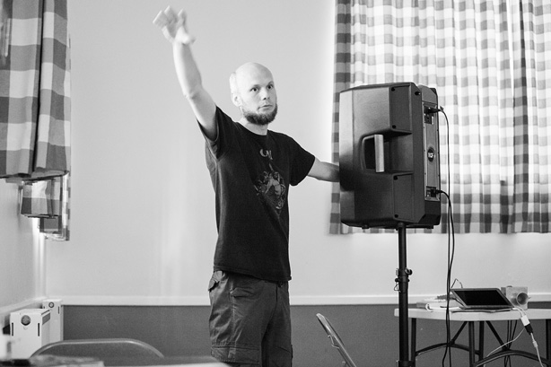
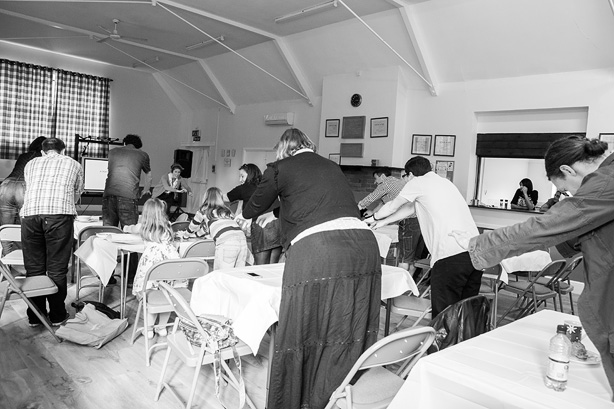
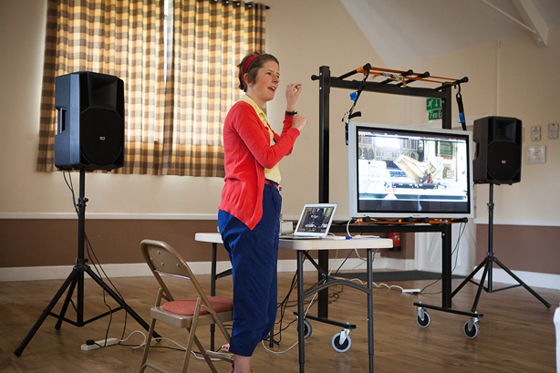

Here are a few pictures from If Wet #18, which took place back in our home of Callow End Village Hall with the wonderful Sarah Nicolls talking about her Inside-Out Piano, and another great contribution from our regular Run What Ya Brunger, Richard Windley.
Our next event is our penultimate of this season, featuring Ben Gwilliam and Pete Ashton! JOIN US.

Sam demonstrating the spacial aspects of our Futuro Mantra sound art boxes

David and Sam, chuckling

Futuro Mantra box

Futuro Mantra boxes

Futuro Mantra box

Sarah Nicolls introducing the background to her Inside-Out Piano

Sarah Nicolls helping us all experience what leaning inside a grand piano is like

Sarah Nicolls presenting her Inside-Out Piano

Sarah Nicolls providing a unique insight into her latest show

Sarah Nicolls providing a unique insight into her latest show
Sarah Nicolls providing a unique insight into her latest show

Richard Windley presenting his LED light and sound display, as a RWYB.
Cheers to George Benson for taking these pictures – except that of Richard Windley, which Sam took on his phone because George needed to dash…